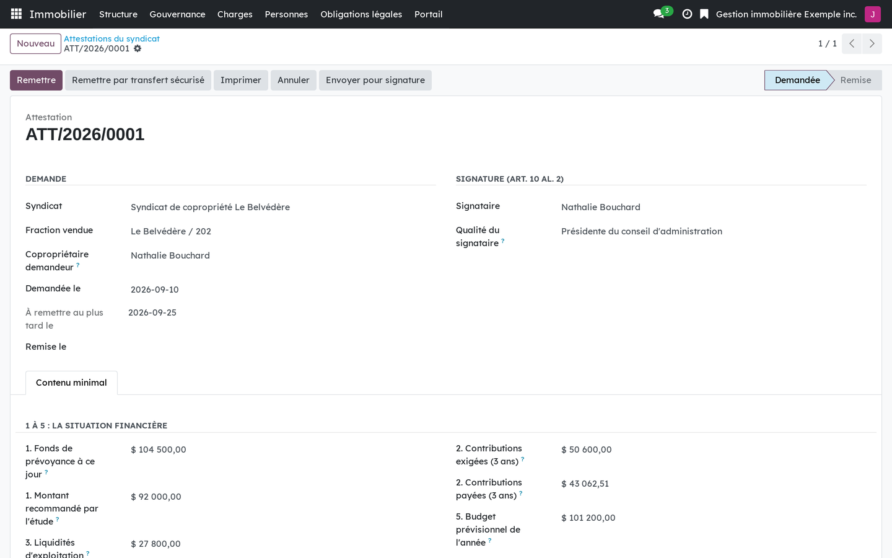

A certificate of the syndicate, with the button that hands it over by secure transfer.
Version française plus bas.
The three regimes of documents owed to a buyer are a transmission of documents to a third party, and two of them carry a fifteen-day deadline. Under art. 1069 para. 2 CCQ that deadline runs against the syndicate: past fifteen days the prospective acquirer is no longer liable for the common expenses due, and the claim has to be pursued against a seller who is often gone. This bridge sends those documents through Secure Transfer. It installs itself when both sides are present.
A certificate of the syndicate, with the button that hands it over by secure transfer.
Requires Co-ownership: maintenance log, study and certificates (bf_property_records), Co-ownership: common expenses and calls for contributions (bf_property_finance) and Secure Transfer (bf_securetransfer). Installs automatically.
Business Source License 1.1. You may use this module in production for your own internal business operations, which include administering immovables that you own or that you are constituted to administer, and letting a person acting on your behalf use your instance for that purpose. Administering immovables for the account of others, or providing the module to third parties as a product or service, whether hosted, managed or resold, requires a separate written agreement with the licensor. Each version converts to LGPL-3.0-or-later on the Change Date stated in the LICENSE file, which sets out the exact terms.
Les trois régimes de documents dus à l'acquéreur sont une transmission de pièces à un tiers, et deux d'entre eux portent un délai de quinze jours. Selon l'art. 1069 al. 2 C.c.Q., ce délai joue contre le syndicat : passé quinze jours, le proposant acquéreur n'est plus tenu des charges dues, et la créance se réclame au vendeur, souvent parti. Ce pont envoie ces documents par le Transfert sécurisé. Il s'installe de lui-même quand les deux côtés sont présents.

Une attestation du syndicat, avec le bouton qui la remet par transfert sécurisé.
Exige Copropriété : carnet, étude et attestations (bf_property_records), Copropriété : charges et appels de fonds (bf_property_finance) et Transfert sécurisé (bf_securetransfer). S'installe automatiquement.
Business Source License 1.1. Vous pouvez utiliser ce module en production pour vos propres activités internes, ce qui comprend l'administration des immeubles dont vous êtes propriétaire ou que vous êtes constitué pour administrer, et l'usage de votre instance à cette fin par une personne qui agit pour votre compte. Administrer des immeubles pour le compte d'autrui, ou fournir le module à des tiers comme produit ou service, hébergé, géré ou revendu, exige une entente écrite distincte avec le concédant. Chaque version passe sous LGPL-3.0 ou ultérieure à la date de changement inscrite au fichier LICENSE, qui fait foi.